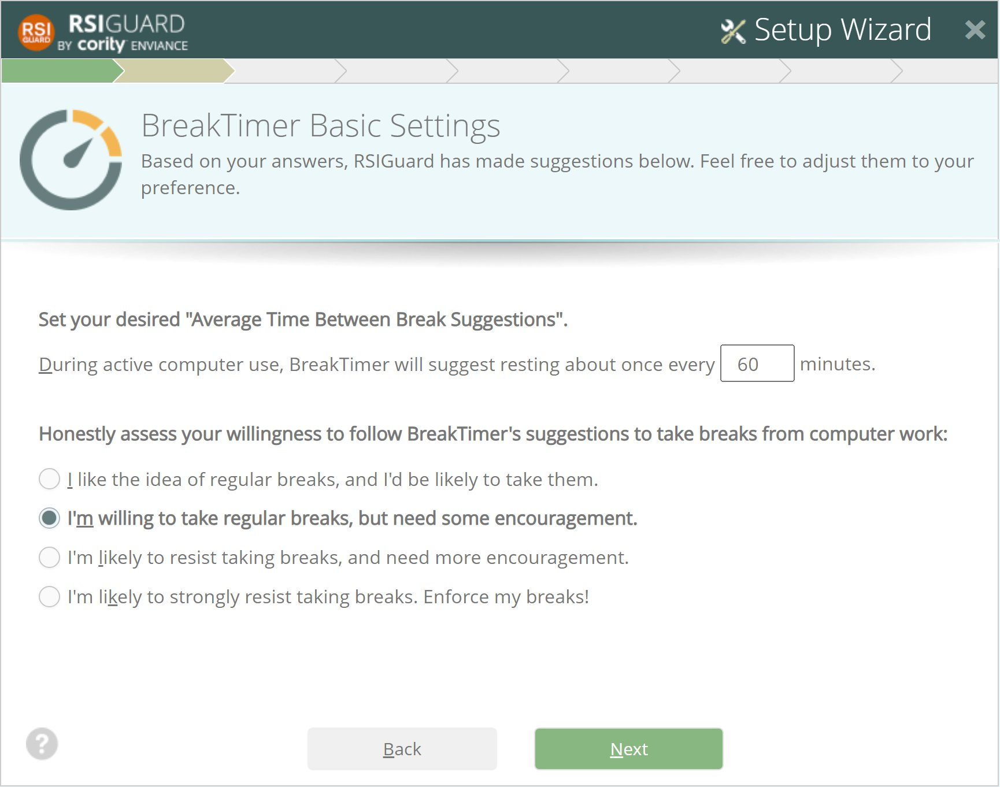

This screen lets you adjust Break Frequency and Willpower.
Break Frequency – Based on your answers on the previous screen, the wizard suggests a reasonable average time between breaks. You can adjust the time based on your preference, but remember, breaks occur less often than the suggested time between breaks if you take natural breaks or work lightly, and more often when you work intensely.
Willpower – When BreakTimer suggests breaks, this setting controls how easy it is for you to postpone or skip those breaks. Consider your personality and the degree to which your job allows you to be interrupted when making this selection. The first option makes it easy to skip breaks and should only be selected if you are likely to take suggested breaks. The last option makes it difficult to skip breaks and should only be selected if it's okay to be more forceful in making you take breaks.
